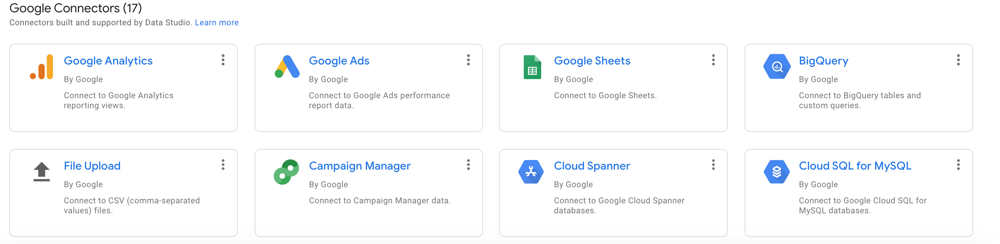
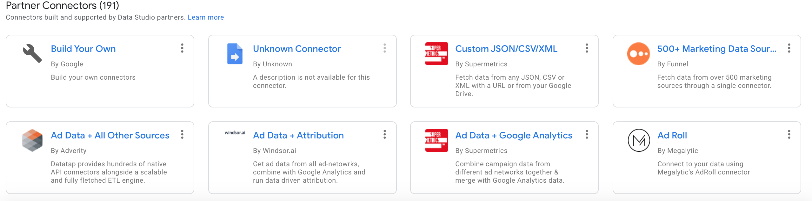

Introduction
tl;dr: Google’s Data Studio is a great (and free) option for making data visualisation dashboards. Being a web-based dashboard application, its ability to connect to other Google products, such as BigQuery and GCP resources offers huge advantage over competing products. You can design a dashboard with minimum programming experience and the process is similar to writing PowerPoint slides. However, DS is mostly for the purpose of visualisation, so R/Shiny still has an advantage in computing and modeling. Below is my hacky 2-page report, correct up to April 2020:
I am in the process of learning how to use BigQuery (some progress are documented here in this post). When I was exploring BigQuery’s web interface, I noticed that BigQuery could be connected with Data Studio (DS), a Google product that makes dashboard/BI visualisations.
Starting started with a DS report
A DS report is made up of multiple pages, much like PowerPoint slides. This tutorial is quite helpful to learn the basics.
- The most powerful part of DS, in my opinion, is how you can add multiple data sources, e.g. SQL databases or Google Sheets. But being part of the Google ecosystem, I think the real power lies in how DS interacts with other Google products like Google Analytics and other third-party data sources.


- In the DS report above, I made connections to the COVID-19 data from Johns Hopskins University and the World Bank global population data. I couldn’t find a Google public data documentation page for the latter, but you can make a SQL query using:
SELECT *
FROM `bigquery-public-data.world_bank_global_population.population_by_country`
LIMIT 10
- Having added the these two data into the DS report, you can visualise these data using charts, such as a table on the page 1 of the report:
In DS, every chart is associated with one data source that you have added. Of course, you can put together multiple data in some meaningful way and make a visualisation. This is exactly what I have done to calculate the “confirmed cases per 1 million” statistic.
A bit more data manipulations
In order to make the heatmap at the beginning of this post, a bit more data manipulations are needed. In particular, joining the two data together using “country” as a common key. Once this is done, we can take the ratio of the confirmed cases and the population and calculate the “confirmed cases per 1 million” statistic and making a heatmap visualisation is straightforward after that.
Joining data in DS is called “blending data”, which you can find out more here. This is identical to the operation of the various JOIN operations in SQL if you choose your settings correctly.

Aside: of course, joining data isn’t the magic silver bullet for everything. If you examine closely on page 2 of the report, you will see that some countries have null values in the confirmed cases column, e.g. South Korea. This is because the name of the country was not consistent between the two counties. E.g. “South Korea” in one data and “Korea, South” in another. This has to be fixed by making a new column with matched names. The way that I did it was to create a country_correct column in the population data using the definitions such as
CASE
WHEN country IN ("United States") THEN "US"
WHEN country IN ("Russian Federation") THEN "Russia"
WHEN country IN ("Iran, Islamic Rep.") THEN "Iran"
ELSE country
END
You will probably notice that this is SQL code and quite similar to the dplyr function case_when. So I think some knowledge of SQL will be helpful when using DS.
Making the visualisations
This is where I was pleasantly surprised and where a point-and-click dashboard visualisation wins over Shiny. Since the country_region/country_correct is a geography variable, it can be directly plotted onto a world map automatically. Also importantly, linked interactivity is easily achieved between the table and the heatmap on page 2.
Aside: these tasks are possible, butnot always the easiest to do in R, plotly is the most competitive in this area (see this example and this example). Sure, I can pick up the codes in 5 minutes, but think about the learning curve behind learning ggplot/plotly framework, this could be overwhelming for people without a programming background. I can’t tell you how many hours I have spent trying to make a plot look right!
Conclusion
For the R/Shiny fanatics, put down your pitchforks, I am not going to abandon R/Shiny any time soon. Shiny is definitely great for customisation, but DS and other professional dashboard software actually do have a lot of awesome ideas. Advanced R/Shiny users can do many things that DS can do, but this is only assuming you have enough experience and know where to look for the right answers. For example:
The fact that I can readily share this report without setting up my own Shiny server or website is a great example of how Google thought about how their products will be distributed!
I am also not an artist, so I actually dislike spending hours to make my Shiny app look pretty, DS actually makes this process much easier since making a dashboard UI is quite similar to making PowerPoint slides.
Connecting to databases might be annoying and slow at times (seriously, it takes about 20 seconds for me to fetch the COVID-19 data over the National Broadband Network here in Australia), but when DS tries to fetch data, it has the backings of Google’s massive servers, and making changes to my visualisation is often done in less than 2 seconds!
I can see myself using DS to visualise my pre-computed results in R and distribute this kind of interactive reports with others without paying for expensive Shiny servers, assuming that simple visualisations are all that I am after.